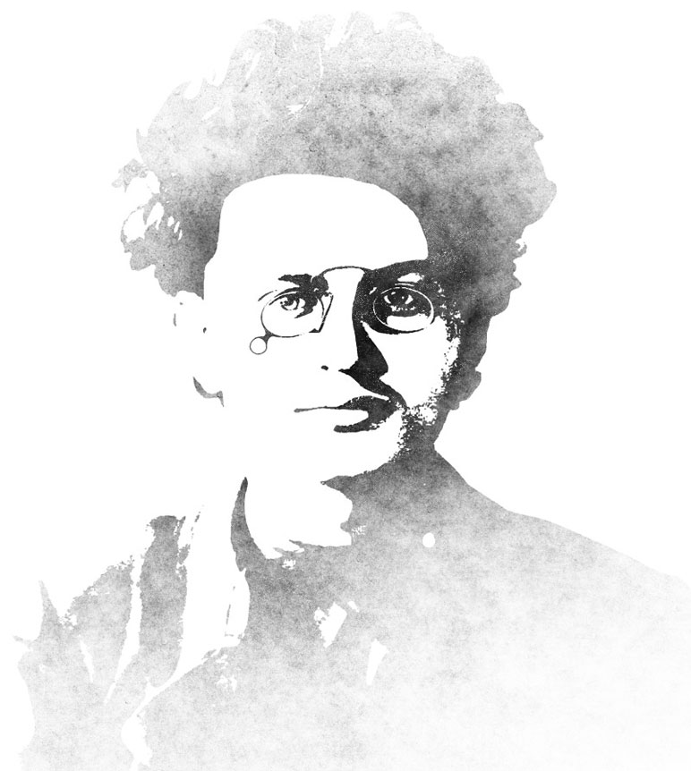
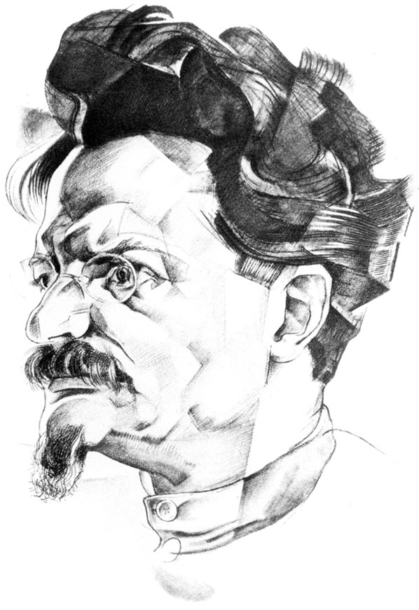

(LEV DAVIDOVICH TROTSKY)
Leiba (Lev) Bronstein was born in Yanovka settlement, Kherson Guberniya (province), in the family of well-off Jewish farmers David and Anna Bronstein.
Leon Trotsky was introduced to Natalia Sedova who then became his life partner.
Being in prison, wrote and published a number of articles to lay down the concept of permanent revolution. By the court decision Trotsky was sentenced to the exile in Siberia for the life term.
Birth of his son Lev.
Birth of his son Sergei in Vienna. Trotsky started to publish the Pravda newspaper.
May. Trotsky came back to Petrograd; took the lead in the interdistrict group of Social Democrats within the Petrograd Soviet of Workers' and Soldiers' Deputies.
July. Arrested by the Provisional Government for alleged collaboration with the German General Staff
August. As a member of the interdistrict group Trotsky joined the RSDRP(b) and soon was elected a member of its Central Committee.
September — October. Trotsky organized and headed the Military Revolutionary Committee under the Petrograd Soviet. He became the de facto facilitator and leader of the October Armed Uprising. In the first Soviet government he was appointed People's Commissar for Foreign Affairs.
December. Trotsky took the lead in the Soviet delegation at Brest-Litovsk negotiations.
January. Trotsky announced war termination from Russia’s side without a peace treaty.
February. He left the seat of Commissar for Foreign Affairs.
March. Appointed People's Commissar for Military Affairs (later—for Military and Naval Affairs), the chairman of the Supreme Military Council (since September—the Revolutionary Military Council of the Republic)
August. First trip to the front near Sviyazhsk by the specifically constructed armored train Russian delegation at the Brest-Litovsk negotiations.
Trotsky offered Council of Labour and Defense draft resolution on the First Army of workers.
Participated in the trade union discussion, stood up for nationalization of trade unions
Trotsky's appeal letter to members of the Central Committee and the Central Control Commission of the RCP (b) containing the intra-party criticism of the regime
Statement of 46, containing the same basic provisions as the letter
Work on the Literature and Revolution book
Trotsky participated in the activities of the plenum of the Central Committee of the CPSU (b), which resulted in the establishment of the joint anti-Stalinist opposition.
At the plenum of the Central Committee he was expelled from the Politburo.
Trotsky managed the actions of the united opposition — took part in the preparation of declaration of opposition leaders (Declaration of 83), the preparation of the draft Platform of the Bolshevik Leninists (opposition) to the Fifteenth Congress of the CPSU (b), and the opposition demonstrations in Moscow and Leningrad in honour of the 10th anniversary of the October revolution.
Expelled from the Central Committee; a month later—from the CPSU (b)
Trotsky was deported to Alma-Ata; where he moved together with Natalia Sedova and his son Lev.
His youngest daughter Nina died in Moscow of tuberculosis.
Trotsky was deported to Turkey from the Soviet Union.
He settled on the island Prinkipo (Buyukada) in the Sea of Marmara.
Began to publish the Bulletin of the Opposition (Bolshevik Leninists)
Trotsky was working on a book of memoirs titled My Life.
His daughter Zinaida came to Prinkipo with her son Vsevolod.
Prepared and published the first volume of the History of the Russian Revolution
After the fire that occurred in their house, the family temporarily moved to Kadikoy, a suburb of Istanbul.
Trotsky and those of his family members who were abroad were deprived of Soviet citizenship.
Trotsky made a trip to Copenhagen, where he delivered a lecture dedicated to the 15th anniversary of the October Revolution, and held a meeting of his supporters.
Trotsky’s daughter Zinaida Volkova committed suicide in Berlin.
Trotsky got a French visa and moved to France.
Trotsky and his supporters made the critical decision on the need for the Fourth International.
Trotsky got a Norwegian visa and moved to Norway.
He received the news that his son Sergei had been arrested in Moscow.
Work on the book The Revolution Betrayed (What is the Soviet Union and Where Is It Going?)
Norwegian authorities placed Trotsky under house arrest.
After receiving a Mexican government visa, Leon Trotsky and Natalia Sedova departed to Mexico on the Norwegian tanker.
Trotsky initiated the meeting of the Dewey committee (part of the International Commission for the Investigation of charges against Trotsky in the Moscow trials). The Commission came to a decision about the innocence of Trotsky.
In Krasnoyarsk Trotsky's son Sergei Sedov was executed by shooting.
Trotsky's son, Lev Sedov died in a Paris hospital under mysterious circumstances.
Founding conference of the Fourth International was held.
Vsevolod Volkov, Trotsky's grandson, came to Coyoacan. Trotsky finished his work on the first volume of Stalin’s biography.
May 24. Unsuccessful attempt of assassination of Trotsky by the Grigulevich-Siqueiros group
August 20. NKVD agent Ramon Mercader delivered fatal blow on Trotsky's head with an ice-axe.
August 21. Trotsky died in a hospital in Green Cross, Mexico City.